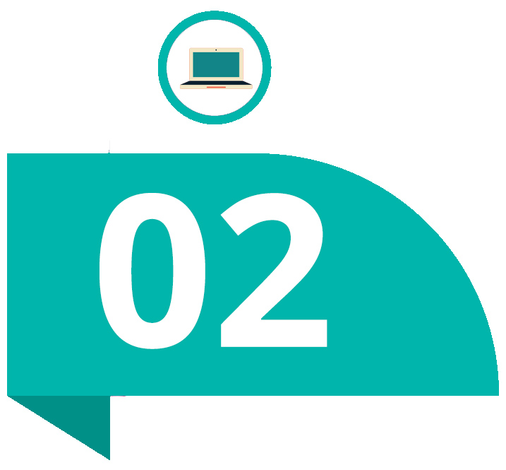
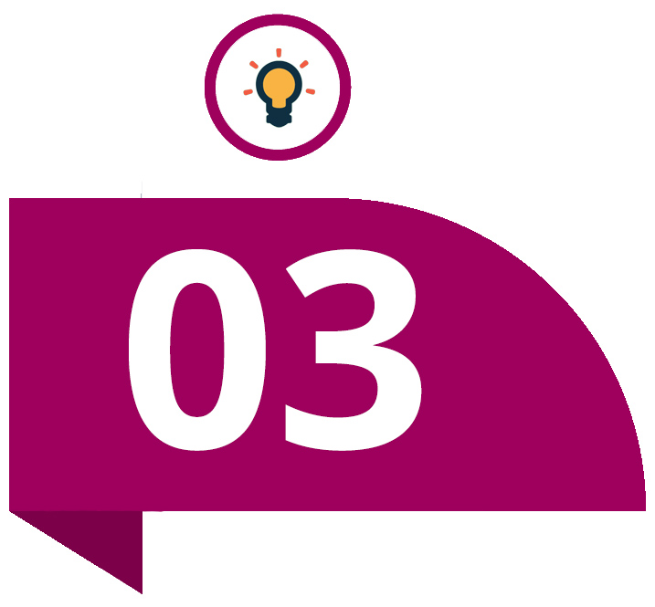
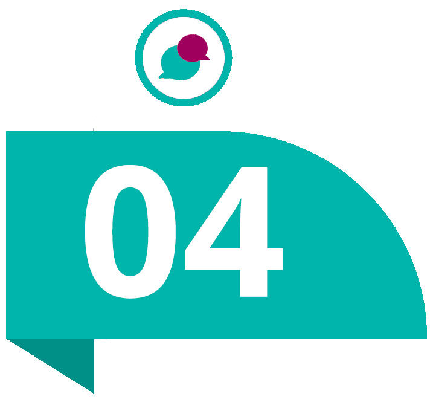
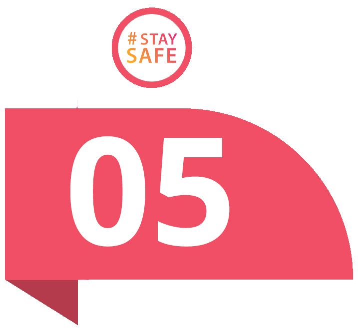

De ce să alegi meditațiile online?
Educație la o calitate superioară
Suntem conștienți cât de importantă este educația în formarea unei persoane. Aducem un aport în educație și venim cu o perspectivă nouă asupra meditațiilor. În forma online, acestea sunt utile, eficiente și foarte accesibile pentru toată lumea. Indiferent de locație, meditațiile online se pot susține fără probleme cu ajutorul platformei meditatiipenet.ro . Tutorii aleși de noi sunt bine pregătiți atât în materiile pe care aceștia le predau, cât și în metodele de predare online.

Nevoia de adaptare
Cu fiecare an, tehnologia avansează, iar sistemul educațional nu este adaptat și rămâne în urmă. Cu ajutorul platformei noastre interactive pentru susținerea meditațiilor online, lecțiile se pot susține printr-o tablă pe care pot scrie cei doi participanți în care se pot insera fișiere, videoclipuri, formule, imagini etc. Platforma interactivă este pregătită să susțină procesul de educație la nivel cât mai înalt.

Stimularea creativității
Creativitatea este una dintre cele mai apreciate calități pe care sistemul educațional nu o apreciază în totalitate cum ar trebui. Tutorii noștri sunt bine pregătiți pentru a aprecia și a stimula creativitatea. Unul dintre cele mai mari avantaje ale meditatiilor online este apropierea pe care tutorele o poate avea cu elevul, tutorele înțelege mult mai bine elevul decât înțelege profesorul o clasă întreagă. Indiferent de cât de introvertit este un elev, meditațiile online nu îl vor intimida și va fi deschis la întrebări și provocări.

Comunicare eficientă
Comunicarea dintre tutore și elev este extrem de importantă pentru a putea avea sesiuni productive și eficiente. Cu ajutorul platformei de mesaje integrate în site-ul nostru, tutorele sau elevul pot discuta, programa, anula sesiuni etc. Să nu uităm, TIMPUL este alt punct forte al meditațiilor online!

Siguranță
În contextul prevenirii răspândirii virusului COVID-19 susținem cu desăvârșire că meditațiile online sunt cea mai bună soluție pentru a limita contactul cu alte persoane.


(C) meditatiipenet.ro